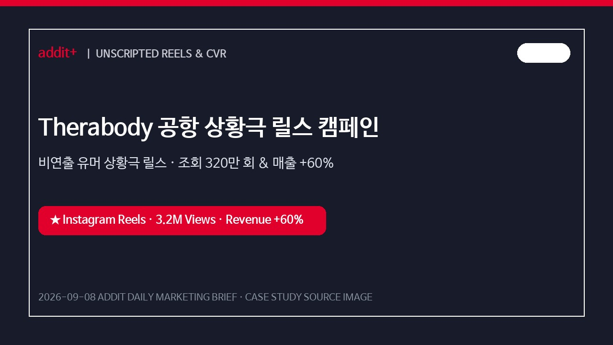
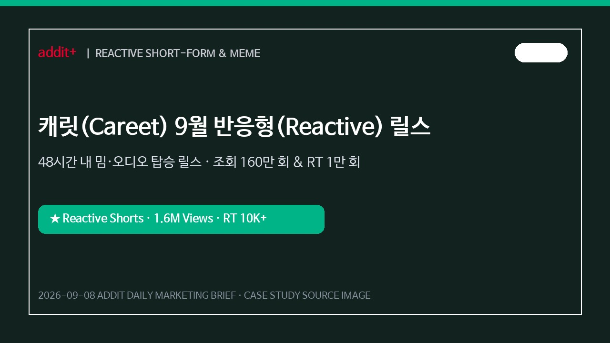
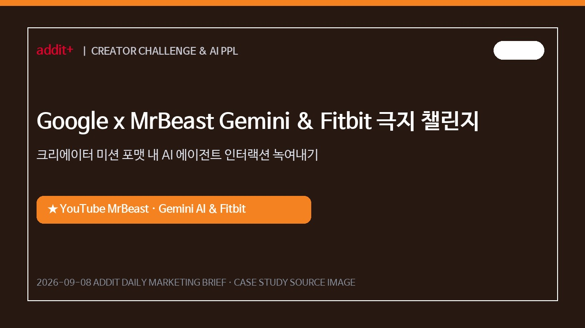
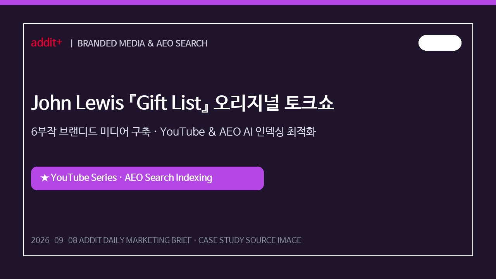
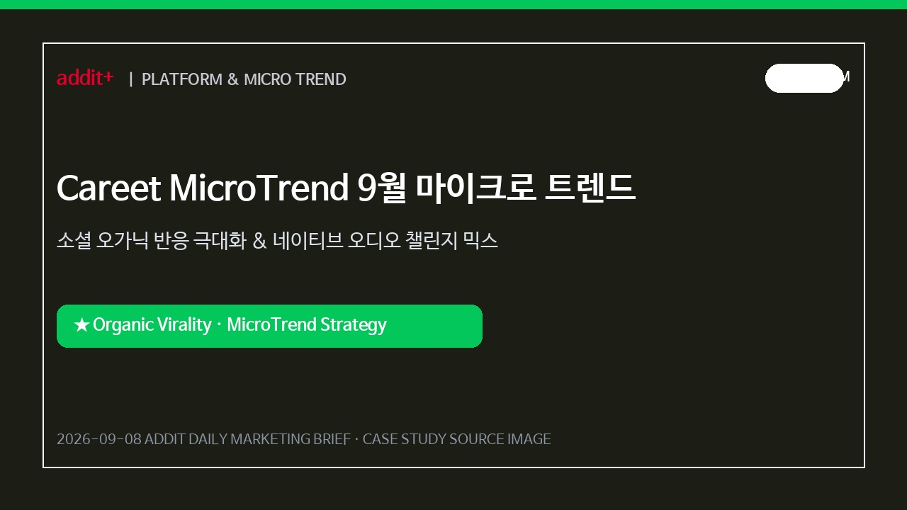
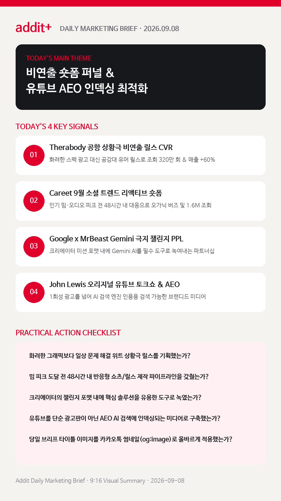

01
비연출·상황극 중심의 일상형 숏폼 퍼널이 높은 전환을 기록한다
스펙과 전후 비교 중심 연출 광고보다 공항 보안검색대 등 일상속 당황스러운 상황을 위트있게 풀어낸 릴스가 매출 +60%를 이끕니다. (MARKETERS INDEX)
Therabody 공항 상황극 릴스, Careet 9월 리액티브 숏폼, Google x MrBeast Gemini 극지 챌린지, John Lewis 토크쇼 AEO 성과 전략을 한눈에 확인합니다.
스펙과 전후 비교 중심 연출 광고보다 공항 보안검색대 등 일상속 당황스러운 상황을 위트있게 풀어낸 릴스가 매출 +60%를 이끕니다. (MARKETERS INDEX)
밈이 소멸하기 전 48시간 내 반응형 숏폼을 제작해 X와 인스타그램 동시 릴리즈로 1.6M 조회를 달성합니다. (CAREET)
MrBeast 정글·사막 탐험 챌린지 포맷 내에 Google Gemini AI와 Fitbit을 필수 해결 도구로 자연스럽게 배치합니다. (THE VERGE)
단순 광고판 탈피 및 6부작 토크쇼 등 지속 검색 가능한 오리지널 소셜 채널을 구축하여 AI 챗봇 인용 가시성을 선점합니다. (THE GUARDIAN)
오프라인 론칭 및 이벤트 시 popular audio와 밈을 빠르게 믹스한 15초 리액티브 쇼츠 시리즈를 정례화합니다. (CAREET & MARKETERS INDEX)

KOREA제품 기능 직접 설명 대신 일상 속 당황스러운 상황극 릴스로 친밀감을 높이고 분기 매출 60% 성장을 이끌었습니다.

KOREA완벽히 짜여진 기획물 대신 10~15초 네이티브 반응형 영상으로 릴스 160만 회 및 X 리트윗 1만 회 이상 확산을 기록했습니다.

GLOBAL단순 PPL 노출을 넘어 AI 에이전트가 극한 임무 완수를 돕는 인터랙션으로 소셜 버즈와 Gen-Z 유입을 선점했습니다.

GLOBAL1회성 광고 클릭 의존에서 벗어나 AI 챗봇(Perplexity, ChatGPT 등) 질의 시 브랜드 영상이 상위 인용되는 자산화를 달성했습니다.

PLATFORM브랜드 공식 계정에서 인기 음원과 밈을 민첩하게 믹스하여 오가닉 노출 및 댓글 2차 참여를 극대화했습니다.
Therabody 사례처럼 연출된 화려한 광고보다 공항/출근길 등 일상속 문제 상황을 위트있게 풀어낸 릴스가 매출 +60%를 견인합니다.
Marketers Index 사례 보기 →John Lewis 사례는 유튜브를 단순히 광고를 태우는 공간이 아닌, 생성형 AI 검색 엔진이 브랜드를 인용하게 만드는 자산으로 구축함을 시사합니다.
The Guardian 기사 보기 →Google x MrBeast 파트너십처럼 AI 기술을 단순 자랑하기보다 크리에이터의 극한 챌린지를 해결하는 핵심 도구로 자연스럽게 배치합니다.
The Verge 보도 보기 →캐릿 리포트가 강조하듯 밈이 소멸하기 전 48시간 내에 브랜드 버전의 릴스/쇼츠로 변형해 반응하는 민첩성이 고효율 소셜 바이럴의 핵심입니다.
캐릿 리포트 보기 →Therabody 비연출 릴스 CVR 케이스 및 9월 소셜 마이크로 트렌드 48시간 반응형 파이프라인을 분석합니다.
Marketers Index 바로가기 →MrBeast Gemini 챌린지 PPL 및 John Lewis 오리지널 유튜브 토크쇼 AEO 최적화 전략을 확인합니다.
The Verge 바로가기 →
마케팅 성과는 단순 스펙 연출형 광고에서 비연출 일상 유머 숏폼, 48시간 반응형 밈 탑승, 유튜브 브랜디드 미디어의 AI 검색(AEO) 최적화 구축으로 완성됩니다.
{kind=link}